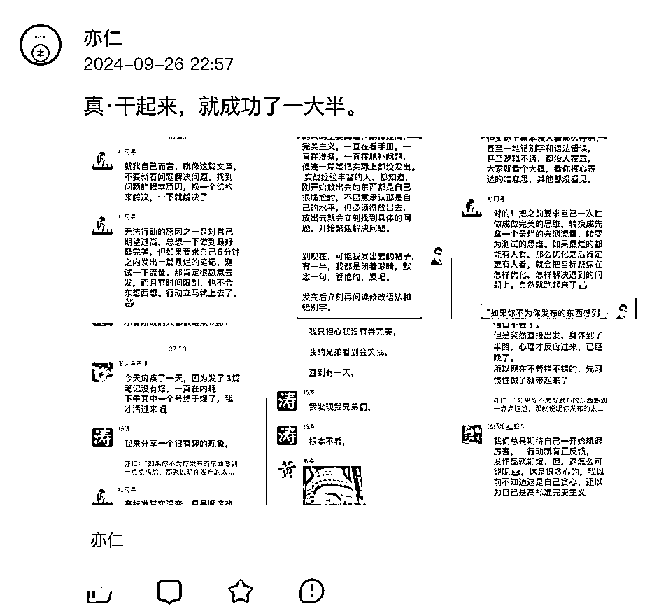
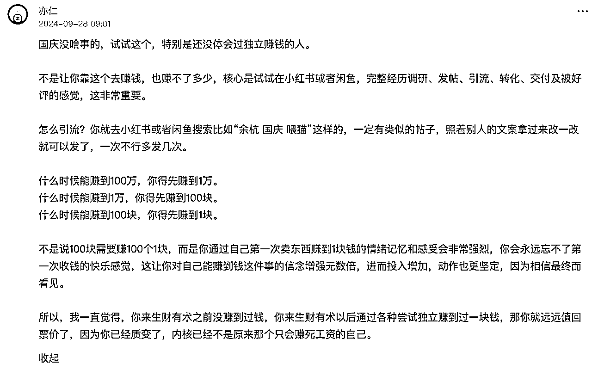
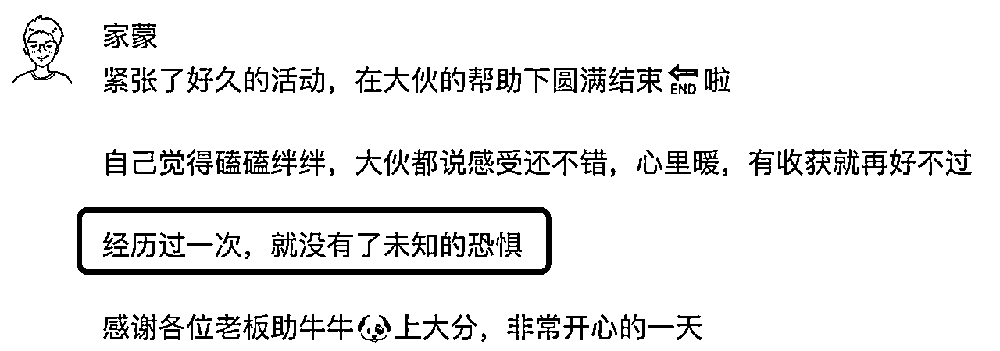
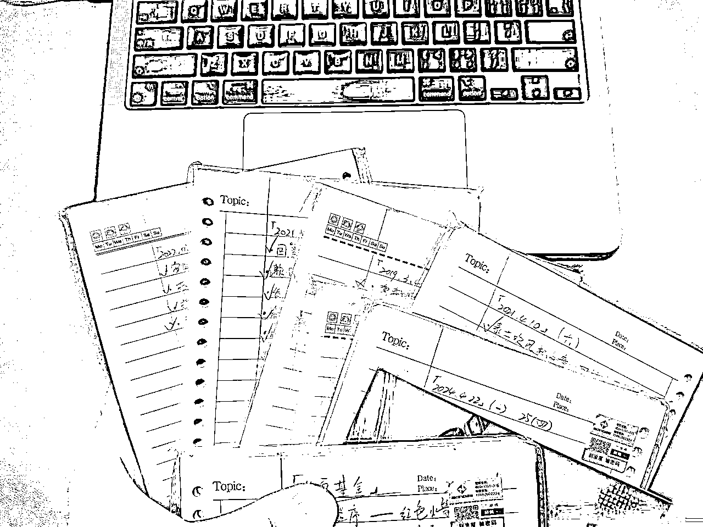
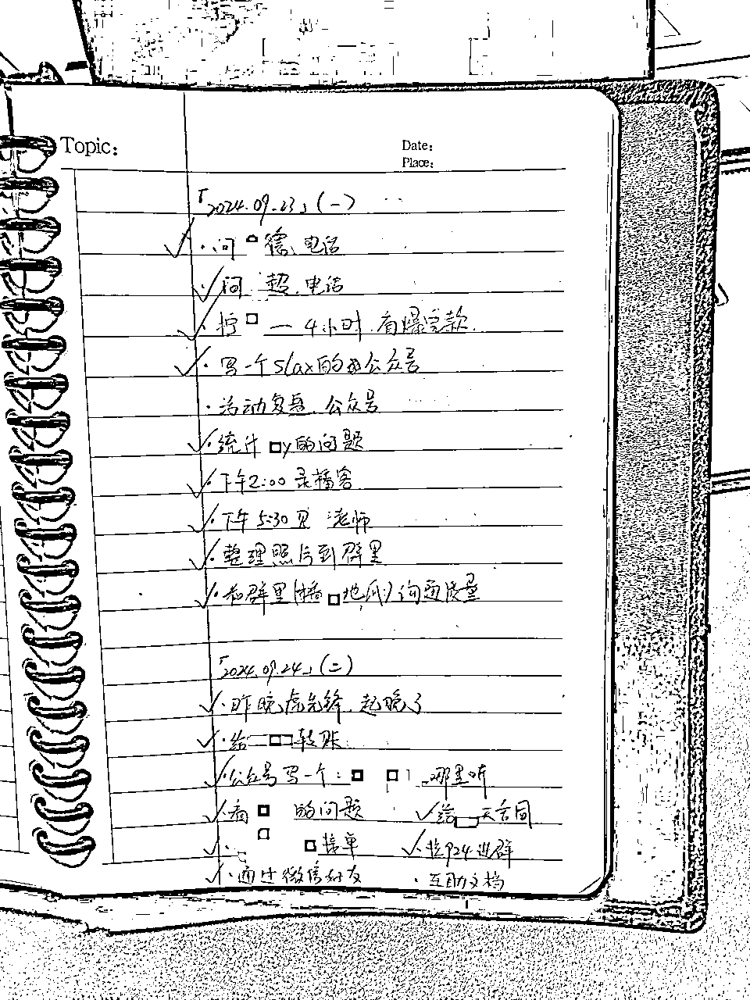
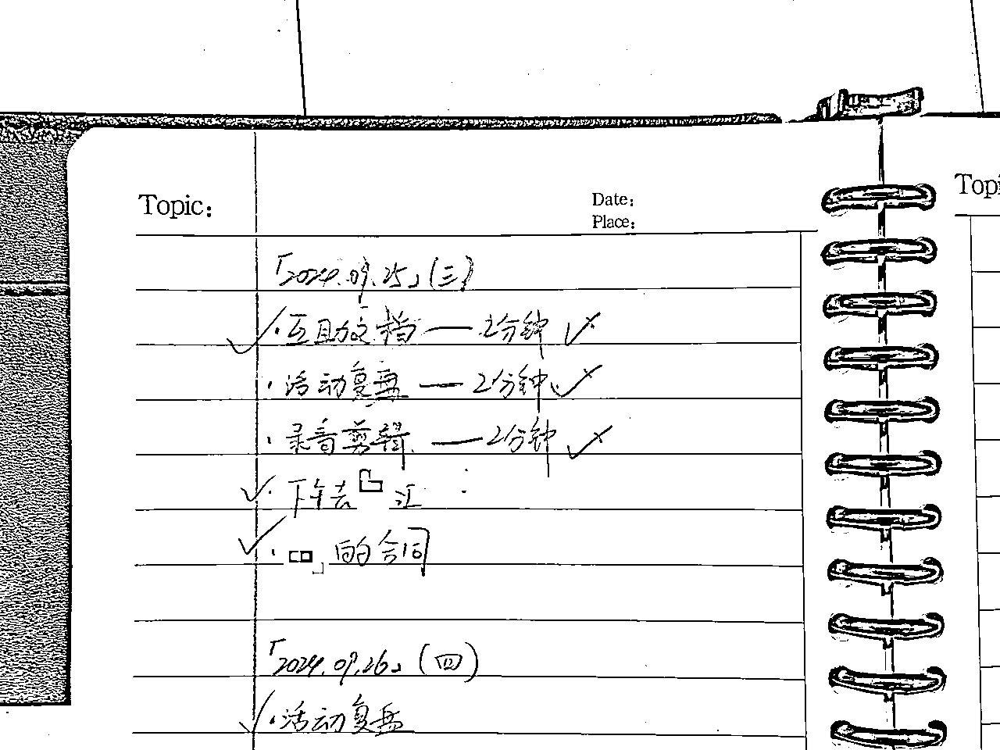

来源：https://i11ahb7ycj.feishu.cn/docx/TYGRdPhbIoY41qxpaOHcCxm1nce
哈喽，我是家蒙
前两天看亦仁哥说，「真·干起来，就成功了一大半。」鼓励大家先赚一块钱，先干起来，先拿到结果。
以此暗示自己：我已变成，不一样的自己。


这几年，每年都在观察生财里有成绩的圈友，多年来有个类似感受——先执行起来，往往能超越大部分同行。
生财里已经是社会里的少部分精英了，但即便是在这样的精英群体中，你的执行力稍微比别人好一点点，也能甩开大部分精英。
并不是执行力有多大的魔力，而是全靠同行衬托——大部分人都太懒了。
这里的懒，并不是指大家不做事，而是心里包袱太重，惯性太大，启动缓慢，且容易刹车。
这么些年，我自己也有很强的拖延症状，最近看了一些国外的文章，觉得和亦仁哥说的主题呼应，
分享出来，希望能帮助大家往前行动一点点。
不卖关子，我直接说答案，
迟迟不敢行动的原因是：内心有恐惧
对陌生的项目、事情没有框架的把握感，觉得自己Hold不住，
总是和自己说，想要更多了解之后，再去行动，
想追求完美，想一次做成，想一口气憋个大招。
常见的，「好的，我研究研究」，
请问这人最后研究了吗？——不研究不能开始吗？
这是借口，推脱，背后的本质是害怕——怕自己做不好，怕做不好被人笑话。
家蒙最近刚结束自己的线下见面会，因为没有做过，对未知充满了恐惧，
我也是迟迟不敢开始，一直处于拖延的状态。
直到某一位嘉宾的行程，在未来两个月里头，只有9月21日附近有空，时间顺理成章的定在了这一天。
随着时间逼近，这才让很多事情得以陆陆续续推进起来。
当下我并不知道那种抗拒、拖延、逃避的心态来自于哪里，
翻过一座小山坡之后，如释重负，发了个朋友圈。

经历过一次，就没有了未知的恐惧。
这下才知道，那些迟迟不能推进的背后，是对于庞大系统的未知，从而导致的恐惧感，以及逃避心理。
其实每个人多多少少都会有拖延情况，可能我性格上比较龟毛一点，
有一些计划中的事儿，没有依照理想状态完成，就会特别烦躁，
所以一件事在家蒙这，要么就准时完成，要么就可能摆烂不做了。
有个2分钟定律，大概是说
一件事如果你觉得有难度，最好在2分钟之内去操作一下，
如果2分钟之内不操作，你可能未来很长一段时间都不会去碰。
说得挺好的，在我身上就是这么回事——很多人也是这么回事。
后来忘了在哪看到，又有一个什么2分钟法则，
说这事儿2分钟能不能搞完？能的话你就咬咬牙花2分钟搞完算了，
如果2分钟搞不完，那就先操作2分钟，多多少少给自己一个暗示：「我为了项目整体进度，推进了一点点」。
这种往前拱一点点的状态，会减少人的挫败感，减少了自责，减少了自我否定，
减少了「觉得自己是个垃圾」的概率，
毕竟我也是付出了2分钟努力的人。
关于拖延症，家蒙见过一个很好的文章，作者Tim Urban，放在这里：
这作者上过TED舞台演讲同样的内容。
演讲视频和文章我都看了，个人认为文章更好，我非常喜欢里面关于「黑暗森林」和「心流」的部分，
视频里没有这部分，可以理解成阉割版：TED演讲：你有拖延症吗？ Tim Urban_哔哩哔哩_bilibili
写在这文章之前，其实家蒙也拖延了
担心的挺多，大部分都是面子上的事。
一直标榜要做个渣男，甚至做个叼毛，言下之意，就是吊儿郎当的，不要那么在乎别人的看法。
但标榜是标榜，实施起来呢，内心总是有很多心理活动。
所以给自己找了个借口，既然要写关于拖延症的文章，那我看一个拖延症的其他文章总合理吧。
确实，第二次看，有一些新的收获，列一下大概是这么些，原文我就直接引用了
「因为对于你真正擅⻓的事情来说，你很少会有拖延症。」
——跟家蒙发朋友圈的感受是一样的，正是因为不擅长，有恐惧感，所以才选择了拖延。
「拖延者往往会利用那些不重要但紧急的事项，来不断推迟那些真正重要的任务。」
——为了逃避写这篇文章，选择先去看其他人的文章。
还好，不是选择去打扫卫生或者整理桌面。
那样的话，这文章又要耽搁了。
「那些惊人而辉煌的成就，从远处看，不过是一连串平凡、微不足道的任务的集合。
没有人“建造一座房子”。他们是一块一块地又一次又一次地放置砖块，最终才有了 一座房子。」
——2分钟法则好像也就是这个意思。
多来几个2分钟，一个项目就差不多可以了。
我自己有个习惯，每天要做什么事情会写在纸上面，这习惯保持了很多年，如今我已经积累了非常多这样写过的纸张
我翻一张个不敏感的信息拍照给大家看看，有时候状态很好，一天可以做很多事。
就比如下边这2天，密密麻麻的，一天做了7-8件事：


但也经常会遇到，很多写下来的事当天并不能完成，
换以前，我就是往后拖，说明天再做吧，
最近我有一点点变化，就算没有做，我也会给自己两分钟的时间去铺垫一下。
可以看下面这一天，就没做几件事，但有三件事都挺重要。

互助文档是一个比较庞大的工程，我花2分钟时间打开了飞书，创建了一个空白的文档，做了一下表头，觉得很充实；
活动复盘是一个很庞大的工作，我打开语音备忘录说了2分钟的话，觉得自己输出了很多，下次做的时候可以把语音里的内容整理成文字，会有帮助，觉得很充实；
录音剪辑动辄10个小时起步，今天实在没时间，我打开剪映把文件导入，并且做了分类，时间线对齐，操作了2分钟上，下一次我上手时就会很顺畅，觉得很充实。
重新说一下，绝大部分人都非常低，执行力都一般，很内耗，都有拖延情况，
所以不要因为自己一点点小瑕疵就过度自责，鼓起勇气，给自己2分钟，往前拱一点点。
（你看你看，第二天，周四，我那个「活动复盘」的任务他就完成了，这里头肯定有周三里2分钟的功劳。）
对了对了，我写这篇文章也用到了2分钟法则，
原本想憋个大招，顺着亦仁哥的帖子当天一口气写完，
后面发现拖延了三天都没行动，
在第四天快下班之前，我才花2分钟把文稿用语音整理，粗糙地放到了知识星球编辑框当中，
在第五天才重新编辑、整理，这才发布了出来。
这个事情，我只用到了一次「2分钟方法」，
2分钟口述+25分钟整理，半小时不到吧，我却拖了5天时间。
我的分享就到这里，希望对你有帮助。